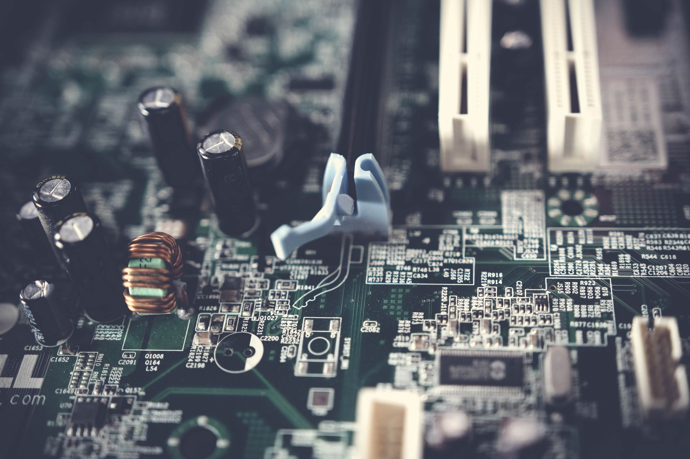

1600조 메가프로젝트, 소부장 수혜 실제로 어디 꽂히나

이재명 대통령은 2025년 AI·반도체·데이터센터를 국가 전략 삼각축으로 공식 선언하고, 관련 인프라 투자 규모를 1600조 원으로 제시했다. 산업부는 동시에 소부장 지원 예산을 1700억 원으로 확정하고 기존 3개 분야에서 방산·희토류를 포함한 6개 분야로 확대했다.
첨단전략산업 6개 분야는 반도체, 디스플레이, 이차전지, 바이오, 방산, 희토류·전략광물이다. 그러나 1700억 원은 삼성전자·SK하이닉스가 연간 집행하는 설비투자의 0.1%에도 미치지 못하는 수준으로, 정책 효과가 대기업 밸류체인 전반으로 확산되기보다 특정 병목 공정에 집중될 가능성이 높다.
'한국판 국부펀드'는 2026년 출범을 목표로 AI·반도체·첨단소재에 장기 투자하는 구조로 설계되고 있다. AI 반도체 풀스택 전략 포럼(전자신문 주관)에서는 설계-제조-패키징-소재의 전 주기를 국내에서 완결하는 '풀스택' 개념이 논의됐으나, 소재 국산화 투자 체계가 아직 민간 주도로 연결되지 않고 있다는 지적이 나왔다.
고려아연의 갈륨 연 15.5t 생산(2028년 목표), 게르마늄 부산물 회수 공정은 현재 국내에서 유일하게 검증된 전략광물 독립 공급 경로다. 소부장 6개 분야 확대에 희토류·전략광물이 추가됐음에도, 실제 회수 공정 투자 지원 항목은 아직 구체화되지 않은 상태다.
1600조 원이라는 숫자가 주는 착시가 있다. 이는 공공 투자 단독이 아니라 민간 포함 누적 투자 목표치다. 실제 정부 재원은 1700억 원 소부장 지원과 국부펀드 장기 투자 구조로 나뉘는데, 2026년 국부펀드 출범 전까지 소재 공급망 투자 공백이 최소 1년 이상 존재한다.
AI 데이터센터 확장과 반도체 팹 증설이 동시에 진행되면 전력·소재·공정가스 세 가지 병목이 동시에 가시화된다. 현재 소부장 정책은 소재 병목 해소에 집중하고 있으나, 제12차 전기본에 AI 전력 수요가 충분히 반영되지 않으면 소재 투자 효과가 반감될 수 있다.
고려아연은 갈륨·게르마늄 국내 독립 공급망을 동시에 보유한 유일한 기업으로, 소부장 6개 분야 확대의 직접 수혜 위치에 있다. 1700억 원 지원 중 전략광물 회수 공정 항목이 신설될 경우 고려아연의 부산물 회수 설비 투자 일부를 정책 자금으로 충당할 수 있다.
AI 반도체 풀스택 전략에서 패키징 소재(에폭시 몰딩 컴파운드, 언더필)와 공정가스(삼불화질소, 육불화텅스텐) 국산화 비율이 낮은 국내 소부장 기업이 국부펀드 장기 투자 대상으로 거론될 가능성이 높다. 해당 분야 국내 기업은 솔브레인, 원익머트리얼즈, 후성 등이다.
정책 수혜 기대감으로 소부장 ETF에 자금이 유입되고 있으나, 1700억 원 예산이 6개 분야에 분산될 경우 분야별 실제 집행 규모는 200~300억 원 수준에 그친다. 대기업 직납 소부장 전반에 걸친 실질 수혜로 이어지기보다 특정 회수 공정·전략광물 가공 분야에 집중될 가능성이 크다.
데이터센터 전력 수요를 제12차 전기본이 과소 반영할 경우, 반도체 팹과 데이터센터 동시 증설 계획이 전력 인프라 부족으로 지연될 수 있다. 이는 소재 납품 타임라인 자체를 뒤흔드는 2차 리스크다.
개인 투자자라면 소부장 ETF 전체보다 6개 분야 내 '전략광물 회수·가공'과 '패키징 소재 국산화' 두 축에 집중된 기업을 선별하는 것이 유효하다. 1700억 원을 6으로 나누면 분야별 약 280억 원으로, ETF 구성 종목 전체에 고르게 수혜가 가지 않는다.
기업 구매 담당자라면 국부펀드 투자 대상으로 거론되는 소재 기업의 재무 체력과 고객사 납품 실적을 2026년 출범 전까지 검증해두는 것이 좋다. 장기 투자 구조 특성상 실제 집행까지 2~3년 시차가 발생하며, 그 공백을 메우는 민간 조달 계약이 오히려 단기 레버리지가 된다.
실제 조달 현장에서는 — 소부장 정책 발표 직후 구매 담당자들이 국산화 비율 확인을 요청하는 사례가 급증하지만, 실제 납품 가능 수량과 인증 기간을 확인하면 6개월~1년 이상 공백이 여전히 존재한다. 정책 발표 시점이 아닌 '시료 인증 완료 시점'을 기준으로 조달 스케줄을 역산해야 한다.
이 포스팅은 쿠팡 파트너스 활동의 일환으로 수수료를 제공받습니다.